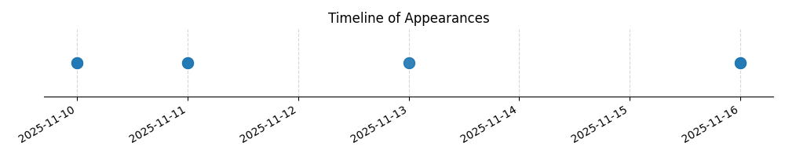

Kategorie: Letecké předpisy
Odpověď B je správná, protože podle Leteckých předpisů (konkrétně ICAO Annex 15 a odpovídajících národních předpisů, které vycházejí z ICAO) je minimální základna oblačnosti pro vzlety a přistání VFR v řízeném okrsku obecně stanovena na 1500 stop (450 m) nad úrovní terénu, pokud není v leteckých informacích (např. AIP) uvedeno jinak. Toto opatření zajišťuje dostatečnou viditelnost a prostorovou orientaci pro piloty VFR v prostoru s řízeným provozem.

| Datum výskytu |
|---|
| 2025-11-16 |
| 2025-11-13 |
| 2025-11-11 |
| 2025-11-10 |